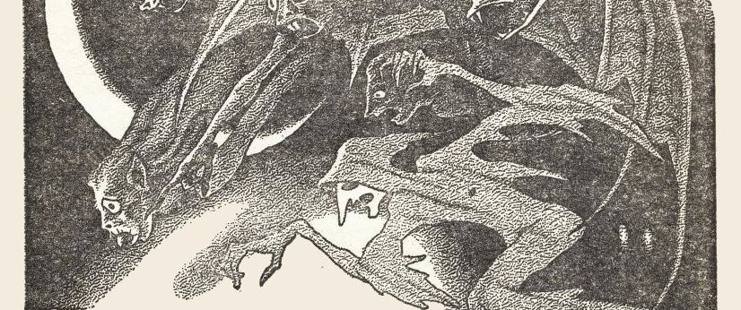

The Night (or "Ice Cream on a Summer's Evening")
Night is more than darkness; it is life and death and all things beyond our feeble knowledges
You are a child in a small town. You are, to be exact, eight years old, and it is growing late at night. Late, for you, accustomed to bedding in at nine or nine-thirty; once in a while perhaps begging Mom or Dad to let you stay up later to hear Sam and Henry on that strange radio that was popular in this year of 1927. But most of the time you are in bed and snug at this time of night.
It is a warm summer evening. You live in a small house on a small street in the outer part of town where there are few street lights. There is only one store open, about a block away. Mrs. Singer's. In the hot evening Mother has been ironing the Monday washing and you have been intermittently begging for ice cream.
Your Mother and yourself are all alone at home in the warm darkness of summer.
Finally, just before it is time for Mrs. Singer to close her store, Mother relents and tells you to:
"Run and get a pine of ice cream and be sure she packs it tight.”
You ask if you can get a scoop of chocolate ice cream put on top, because you don't like vanilla, and Mother agrees. You clutch the money and run barefooted over the warm evening cement sidewalk, under the apple trees and oak trees toward the store. The city is so quiet and far off, you can hear the crickets sounding in the spaces beyond the hot indigo trees that hold back the stars.
Your bare feet slap on the pavement, you cross the street and, a lonely little boy, find Mrs. Singer moving ponderously about her business, singing Yiddish melodies.
“Pint ice cream. Chocolate on top. Yes,” she says.
You watch her fumble the metal top off the ice-cream freezer and manipulate the scoop, packing the cardboard pint chock full with "chocolate on top, yes.” You give the money, receive the chill, icy pack, and rubbing it across your brow and cheek, laughing, you thump barefootedly homeward. Behind you, the lights of the lonely little store blink out and there is only a street light shimmering on the corner, and the whole city seems to be going to sleep. . . .
Opening the screen door, you find Mother still ironing. She looks hot and irritated, but she smiles just the same.
"When will father be back from lodgemeeting,” you ask.
"About eleven-thirty or twelve,” Mother replies. She takes the ice cream to the kitchen and divides it. She gives you your special portion of chocolate, dishes out some for herself and puts the rest of it away, "We'll save some for Skipper and your father.”
Skipper is your brother. He is your older brother. Twelve years old he is, and healthy, red-faced, hawk-nosed and tawny-haired. Broad-shouldered for his years and always running. He is allowed to stay up later than you. Not much later, but enough to make him feel it is worth while being born first. He is over on the other side of town this evening to a game of kick-the-can and will be home soon. He and the older kids have been yelling and kicking and running all evening, having fun. Soon he will come clomping in, smelling of sweat and green grass on his knees where he fell, and smelling very much in all ways like Skipper; which is natural.
You sit and enjoy the ice cream. You are at the core of the deep dark summer night. Your Mother and yourself and the night all around this little house on this little street. You lick each spoon of ice cream thoroughly before digging for another, and Mother puts her ironing board away and the hot iron in its case, and she sits in the armchair by the phonograph, eating her dessert and saying, "My lands, it was a hot day today. It's still hot. Earth soaks up all the heat and lets it out at night. It'll be soggy sleeping tonight.”
You both sit there listening to the summer silence. The darkness is pressed down by every window and door, with the stars holding up the rest of the universe. There is no sound. The radio needs a new battery, and you have played all the Knickerbocker Quartet records and A1 Jolson and the Two Black Crow records to exhaustion; so you just sit on the hardwood floor by the door and look out into the dark dark dark, pressing your nose against the screen until the flesh of its tip is moulded into small dark squares.
"I wonder where your brother is?” Mother says after a while. Her spoon scrapes on the dish. "He should be home by now. It's almost nine-thirty.”
“He'll be here,” you say, knowing very well that he will be.
You follow Mom out to wash the dishes and put them in the cupboard. Each sound, each rattle of spoon or dish, is amplified in the baked evening. Silently, you go to the living room again, take the cushions off the couch and, together, yank it open and extend it down into the double bed that it secretly is. Mother makes the bed, punching the pillows neatly to flump them up for your head and then, as you are unbuttoning your shirt, she says:
"Wait a while, Doug.”
"Why?”
"Because. I say so.”
“You look funny. Mom.”
Mom sits down a moment and then gets up and goes to the door and calls. You listen to her calling and calling Skipper, Skipper, Skiiiiiiiperrrrrrrr over and over. Her calling goes out into the summer warm dark and never comes back. The echoes pay no attention.
Skipper. Skipper. Skipper.
Skipper!
And as you sit on the floor a coldness that is not ice cream and not winter, and not part of the heat of summer, goes through you. You notice tlie way Mover's eyes slide and blink and the way she stands undecided and is kind of nervous. All of these things—
Mother opens the screen door. She steps out into the night and walks off the porch, down the steps, and down the walk about fifty feet. You listen to her feet moving.
She calls again. Silence.
She calls twice more. You sit in the room, listening. Any moment now Skipper will reply, from down the long, long narrow street:
"All right. Mom! All right. Mother! Coming!”
But he doesn't answer. And for two minutes you sit there looking at the made-up bed, the silent radio, the silent phonograph, at the chandelier with the crystal bobbins on it, at the rug with the scarlet and blue curlicues on it. You stub your toe on the edge of the bed purposely to see how much it hurts. Quite a bit.
Whining, the screen door opens, and Mother says:
"Come on. Shorts. We'll take a walk.”
"Where to?”
"Just down the block. Come on. Better put your shoes on, though. You'll catch cold.”
"No, I won't. I'll be all right.”
You take her hand and together you walk down St. James Street. You smell lilacs in blossom; fallen apples lying crushed and odorous in the deep grass. Underfoot, the concrete is still warm; and the crickets are sounding louder against the darkening dark. You reach a corner, turn, and walk toward the ravine.
Off somewhere, a car goes by, flashing its lights in the distance. There is such a complete lack of life, light and activity. Here and there, back off from where you are walking toward the ravine, you see faint squares of light where people are still up. But most of the houses, darkened, are sleeping already, and there are a few lightless places where the occupants of a dwelling sit talking low dark talk on their front porches. You hear a porch swing squeaking as you walk past.
"I wish your father was home,” says Mother. Her large hand tightens around your small one. "Just wait'll I get that boy. I'll spank him within an inch of his life.”
There is a razor strop in the kitchen for this. You think about it, remembering when Dad has doubled it, flourished it with muscled control over and across your leaping flanks. You doubt whether Mother will carry out her promise.
Now you have walked another block and are standing by the holy black silhouette of the German Baptist Church at the corner of Chapel Street and Glen Rock. In back of the church a hundred yards, the ravine begins. You can smell it. It has a dank sewer, rotten foliage, dark green odor. It is a wide ravine that cuts and twists across the town, a jungle by day; a place to let alone at night, Mother has often declared.
You should feel encouraged by the nearness of the German Baptist Church, but you are not — because the building is not illumined, is cold and useless as a skeleton hulk brooding on the ravine's lip.
You are only eight years old and you know little of death and fear and dread. Death is the waxen effigy in the coffin when you were six and your Grandfather passed away; looking like a great fallen vulture in his coffin, silent withdrawn, no more to tell you how to be a good boy, no more to comment succinctly upon politics. Death is your little sister one morning when you awaken at the age of seven, look into her crib and see her staring up at you with a blind blue, fixed and frozen stare until the men came with a small wicker basket to take her away. Death is when you stand by her high-chair four weeks later and suddenly realize she will never be in it again, laughing or crying and making you jealous of her because she was born. That is death.
But this is more than death. This summer night wading deep in time and stars and warm eternity. It is an essence of all the things you will ever feel or see or hear in your life again, being brought steadily home to you all at once.
Leaving the sidewalk, you walk along a trodden, pebbled, weed-fringed path to the ravine's edge. Crickets, in loud full drumming chorus now, are shouting to quiver the dead. You follow obediently behind brave, fine, tall Mother who is defender of all the universe. You feel braveness because she goes before, and you hang back a trifle for a moment, and then hurry on, too. Together, then, you approach, reach and pause at the very edge of civilization.
The ravine.
Here and now, down there in that pit of jungled blackness is suddenly all the evil you will ever know. Evil you will never understand. All of the nameless things are there. Later, when you have grown you will be given names to label them with. Ghosts, leprechauns, trolls, goblins, spirits; pitiful epithets, meaningless syllables to describe the waiting gloom. Down there in the huddled shadows, among the thick tree trunks and trailing vines, lives the odor of decay. Here, at this place, civilization ends, reason ends, and a universal evil takes over.
You realize you are alone. Yourself and your Mother. Her hand trembles.
Her hand trembles.
Your belief in your private world is shattered. You feel your Mother tremble. Why does she do that? Is she, too, doubtful? But is she not bigger, stronger, more intelligent than yourself? Does she, too, feel that intangible menace, that groping out of darkness, that crouching malignancy down below? Is there, then, no strength in growing up, no solace in being an adult, no sanctuary any place in life, no flesh citadel strong enough to withstand the scrabbling assault of midnights? Doubts flush your mind. Ice cream lives again in your throat, stomach, spine and limbs; you are instantly cold as a wind out of December-gone.
You realize that all men are like this. That each man is to himself one alone. One oneness, a unit in a society, but always afraid. Like here, standing. If you should scream now, if you should holler for help, would it matter?
You are so close to the ravine now that in the instant of your scream, in the interval between someone hearing it and running to rescue you, much could happen.
Blackness could come swiftly, swallowing; and in one titanically freezing moment all would be concluded. Long before dawn, long before police with flashlights might probe the disturbed pathway, long before men with trembling brains could rustle down the pebbles to your help. Even if they were within five hundred yards of you now, and help certainly is, in three seconds a dark tide could rise to take all eight years of life away from you and Death would meet you in the full.
The essential impact of life's loneliness crushes your small, beginning to tremble body. Mother is alone, too. She cannot look to the sanctity of marriage, the protection of her family's love, she cannot look to the Constitution of the United States, or the City Police, she cannot look anywhere, in this very instant, but into her heart, and there she will find nothing but uncontrollable repugnance and a will to fear. In this instant it is an individual problem seeking an individual solution. You must accept being alone and work on from there.
You swallow hard and cling to your Mother. Oh, Lord, don't let her die, you think. Don't do anything to us. Father will be coming home from lodge-meeting in an hour and if the house is empty. . . ?
Mother advances down the path into the primeval jungle a few paces. Your voice is all made of trembles. "Mother. Skip's all right. Skip's all right. He's all right. Skip's all right.”
Mother's voice is strained, quiet. "He always comes through here. I tell him not to, but those darned kids, they come through here anyway. Some night he'll come through and never come out again — ”
Never come out again. That could mean anything. Tramps. Criminals. Darkness. Accidents. Most of all — Death.
Alone in the universe.
There are a million small towns like this all over the world. Each as dark, as lonely, as removed, as full of shuddering and wonder. The reedy playing of minorkey violins is the small town's music, with no lights but many shadows. Oh the vast swelling loneliness of them. The secret damp ravines of them. Life is a horror living in them at night, when at all sides sanity, marriage, children, happiness, is threatened by an ogre called Death.
Mother raises her voice into the night.
"Skip! Skipper!” she calls. "Skip! Skipper!”
Suddenly, both of you realize there is something wrong. Something very wrong. You listen intently and realize what it is.
The crickets have stopped chirping.
Silence is complete.
Never in your life a silence like this one. One so utterly complete. Why should the crickets cease? Why? What reason? They have never stopped ever before. Not ever.
Unless. Unless —
Something is going to happen. It is as if the whole ravine is tensing, bunching its blade muscles, drawing in its power from all around the sleeping countryside for miles and miles. From damp dells, from rolling hills where dogs howl to moons, from all around the great silence is sucked into one tight ball, and you at the center of it. In ten seconds now, something will happen. Something will happen. The crickets are still silent, and the stars so close they almost brush your head a cosmic blow. Swarms of them. The night is still hot.
Growing, growing, the silence. Growing, growing, the tenseness. Oh, it is so dark, so far away from everything. Oh, oh, God.
And then, way, way off in the silence:
"Okay, Mom. Coming, Mother!”
And again;
"Hi, Mom! Coming, Mom!”
And then the quick scuttering of feet running down through the stomach of the ravine as three kids come running, laughing. Your brother, Skipper, and Chuck Redman and Augie Bartz. Running, laughing.
The stars suck back up in the sky like the stung antennae of ten million snails.
The crickets chirp again.
The darkness pulls back, startled, shocked, angry. Pulls back, losing its appetite at being so rudely interrupted as it prepared to feed. The darkness yanks back its odorous wet skirt and the three kids pile out of it, laughing.
"Hi, Mom! Hi, Shorts!”
It smells like Skipper, all right. Sweat and grass and his oiled leather baseball glove.
"Young man, you're going to get a licking,” declares Mother. She puts away her fear instantly. You know she will never tell anybody of it, ever. It will be in her heart though, for all time, as it is in your heart, for all time.
You walk home to bed in the late summer night. You are glad Skipper is alive. Very glad. For a moment there you thought —
Far off in the dim moonlit country, over a viaduct and down a valley, a train goes running along and it whistles like a lost metal nameless thing. You go to bed, shivering, beside your brother, listening to that train whistle, and thinking of a cousin who lived way out in the country where that train is now; a cousin who died of pneumonia late at night years ago. ...
You hear footsteps outside the house on the sidewalk, as Mother is turning out the lights. A man clears his throat in a way you recognize.
Mother says, "That's your father.”
It is.